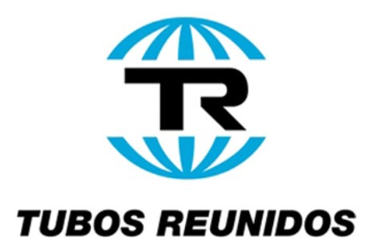

Alimentos
En el sector de alimentos, Dinalan ha trabajado con empresas de la talla de:
- Pepsi - Kas
 General Mills
General Mills- Coca Cola
- Artiach / Nabisco
- Agra / Unilever
- Tabacalera
Química y fabricación
En el sector de química y fabricación, Dinalan ha trabajado con empresas de la talla de:
- Montefibre
- Guardian
- Befesa
- Turboplast
 Cikautxo
Cikautxo- Fabrelec / Edesa
Siderurgia y metalurgia
En el sector de siderurgia y metalurgia, Dinalan ha trabajado con empresas de la talla de:
- Alcasa
- GEC alsthom
- Tubacex
- Nervacero
- Sidenor
- Tubos reunidos
Otros
En otros sectores, Dinalan ha trabajado con empresas de la talla de:
 SEUR
SEUR- ABB
- Construcciones Aeronáuticas CASA
- Azkoyen
 Arteche
Arteche